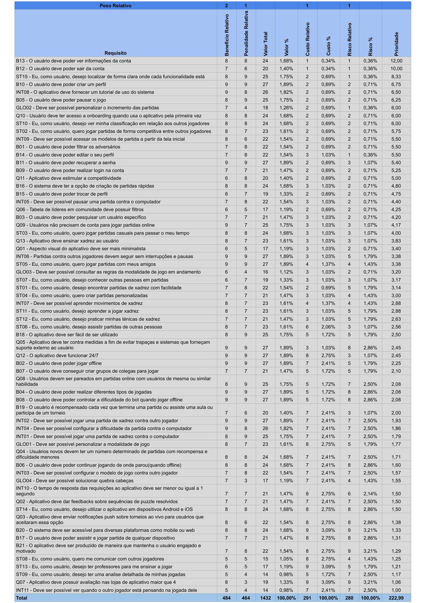

Priorização
Introdução
O principal objetivo das técnicas de priorização de requisitos é auxiliar na escolha das funções ou funcionalidade mais essenciais em um sistema em desenvolvimento, definindo estratégias e parâmetros capazes de fornecer um resultado mais apropriado para cada tipo de problema. Essa prática é de relevante importância em um cenário em que as expectativas do cliente são altas, os prazos são curtos e os recursos são limitados.
MoSCoW
O método MoSCoW é uma técnica priorização de requisitos que pode ajudar o time de desenvolvimento no processo de tomada de decisão. Alguns dos objetivos dessa estrutura são:
- Identificar o grau de prioridade das tarefas em um projeto.
- Alinhar stakeholders sobre o que deve ser feito, de acordo com a ordem de importância dos elementos considerados.
Metodologia - MoSCoW
Suas iniciais representam:
- Must-Have
- Should
- Could-Have
- Would/Want/Won't-Have
Must-Have
Correspondem às tarefas indispensáveis para a realização do projeto e que precisam ser priorizadas. Tudo que for considerado Must-Have é fundamental para o Produto. São iniciativas de alto impacto, que agregam valor ao produto e que, caso não sejam feitas, prejudicam a experiência do cliente. Essas demandas são as mais urgentes, e o time deve concentrar esforços para resolvê-las primeiro.
Should-Have
Devem ser incluidos aqueles que são importante para a realização do projeto, mas não fundamentais, como as atividades Must-Have.
Could-Have
São menos importantes que requisitos should-have. Agregam valor ao projeto, mas sua ausência não impacta significantemente
Would/Want/Won't-Have
São aqueles que não tem importância significativa para o projeto. A presença ou ausência desses requisitos não tem impacto na conclusão satisfatória do projeto.
Na tabela 1 estão identificados os requisitos elicitados respectivamente priorizados:
| Identificador | Requisito | Priorização |
|---|---|---|
| GLO01 | Deve ser possível personalizar a modalidade de jogo | Could |
| GLO02 | Deve ser possível personalizar o incremento das partidas | Would |
| GLO03 | Deve ser possível consultar as regras da modalidade de jogo em andamento | Could |
| GLO04 | Deve ser possível solucionar quebra cabeças | Could |
| INT01 | Deve ser possível jogar uma partida de xadrez contra o computador | Must |
| INT02 | Deve ser possível jogar uma partida de xadrez contra outro jogador | Must |
| INT03 | Deve ser possível configurar o modelo de jogo contra outro jogador | Should |
| INT04 | Deve ser possível configurar a dificuldade da partida contra o computador | Must |
| INT05 | Deve ser possível pausar uma partida contra o computador | Must |
| INT06 | Partidas contra outros jogadores devem seguir sem interrupções e pausas | Must |
| INT07 | Deve ser possível aprender movimentos de xadrez | Should |
| INT08 | O aplicativo deve fornecer um tutorial de uso do sistema | Should |
| INT09 | Deve ser possível acessar os modelos de partida a partir da tela inicial | Should |
| INT10 | O tempo de resposta das requisições ao aplicativo deve ser menor ou igual a 1 segundo | Would |
| INT11 | Deve ser possível ver quando o outro jogador está pensando na jogada dele | Would |
| Q01 | Aspecto visual do aplicativo deve ser mais minimalista | Could |
| Q02 | Aplicativo deve dar feedbacks sobre sequências de puzzle resolvidos | Would |
| Q03 | Aplicativo deve enviar notificações push sobre torneios ao vivo para usuários que aceitaram essa opção | Could |
| Q04 | Usuários novos devem ter um número determinado de partidas com recompensa e dificuldade menores | Would |
| Q05 | Aplicativo deve ter contra medidas a fim de evitar trapaças e sistemas que forneçam suporte externo ao usuário | Must |
| Q06 | Tabela de líderes em comunidade deve possuir filtros | Would |
| Q07 | Aplicativo deve possuir avaliação nas lojas de aplicativo maior que 4 | Could |
| Q08 | Usuários devem ser pareados em partidas online com usuários de mesma ou similar habilidade | Should |
| Q09 | Usuários não precisam de conta para jogar partidas online | Could |
| Q10 | Usuário deve ter acesso a onboarding quando usa o aplicativo pela primeira vez | Must |
| Q11 | Aplicativo deve estimular a competitividade | Could |
| Q12 | O aplicativo deve funcionar 24/7 | Must |
| Q13 | Aplicativo deve ensinar xadrez ao usuário | Must |
| ST01 | Eu, como usuário, desejo encontrar partidas de xadrez com facilidade | Must |
| ST02 | Eu, como usuário, quero jogar partidas de forma competitiva entre outros jogadores | Must |
| ST03 | Eu, como usuário, quero jogar partidas casuais para passar o meu tempo | Must |
| ST04 | Eu, como usuário, quero criar partidas personalizadas | Must |
| ST05 | Eu, como usuário, quero jogar partidas com meus amigos | Must |
| ST06 | Eu, como usuário, desejo assistir partidas de outras pessoas | Should |
| ST07 | Eu, como usuário, desejo conhecer outras pessoas em partidas | Would |
| ST08 | Eu, como usuário, quero me comunicar com outros jogadores | Could |
| ST09 | Eu, como usuário, desejo ter uma analise detalhada de minhas jogadas | Would |
| ST10 | Eu, como usuário, desejo ver minha classificação em relação aos outros jogadores | Must |
| ST11 | Eu, como usuário, desejo aprender a jogar xadrez | Should |
| ST12 | Eu, como usuário, desejo praticar minhas ténicas de xadrez | Could |
| ST13 | Eu, como usuário, desejo ter professores para me ensinar a jogar | Could |
| ST14 | Eu, como usuário, desejo utilizar o aplicativo em dispositivos Android e iOS | Should |
| ST15 | Eu, como usuário, desejo localizar de forma clara onde cada funcionalidade está | Must |
| B01 | O usuário deve poder filtrar os adversários | Should |
| B02 | O usuário deve poder jogar offline | Must |
| B03 | O usuário deve poder pesquisar um usuário específico | Could |
| B04 | O usuário deve poder realizar diferentes tipos de jogadas | Must |
| B05 | O usuário deve poder pausar o jogo | Must |
| B06 | O usuário deve poder continuar jogando de onde parou(quando offline) | Must |
| B07 | O usuário deve conseguir criar grupos de colegas para jogar | Could |
| B08 | O usuário deve poder controlar a dificuldade do bot quando jogar offline | Must |
| B09 | O usuário deve poder realizar login na conta | Should |
| B10 | O usuário deve poder criar um perfil | Should |
| B11 | O usuário deve poder recuperar a senha | Must |
| B12 | O usuário deve poder sair da conta | Must |
| B13 | O usuário deve poder ver informações da conta | Should |
| B14 | O usuário deve poder editar o seu perfil | Should |
| B15 | O usuário deve poder trocar de perfil | Should |
| B16 | O sistema deve ter a opção de criação de partidas rápidas | Must |
| B17 | O usuário deve poder assistir e jogar partida de qualquer dispositivo | Should |
| B18 | O aplicativo deve ser fácil de ser utilizado | Must |
| B19 | O usuário é recompensado cada vez que termina uma partida ou assiste uma aula ou participa de um torneio | Could |
| B20 | O sistema deve ser acessível para diversas plataformas como mobile ou web | Should |
| B21 | O aplicativo deve ser produzido de maneira que mantenha o usuário engajado e motivado | Must |
First Things First (FTF)
First Things First é uma técnica de priorização em que um levantamento de dados de benefícios, custos e riscos relacionados a cada requisito são levantados. Assim como a técnica MoSCoW, ela é utilizada para criar uma ordem de prioridades dos requisitos a serem implementados.
Metodologia - FTF
Para a respectiva técnica de priorização é apresentada, em forma de tabela, os riscos, custos, benefícios e a penalidade relativa de cada requisito elicitado para o projeto, além de equilibrar os posicionamentos do cliente e do desenvolvedor.
Segue o esquema:
- Listar todos os requisitos em uma tabela, retirando aqueles dependentes de outro requisito.
- Estimar o benefício relativo que cada recurso fornece ao cliente ou ao negócio de 1 a 9, em que 1 é o menos significativo e 9 o mais significativo.
- Estimar a penalidade que o negócio sofreria, se o recurso não fosse incluído, de 1 a 9, em que 1 é o com menor penalidade e 9 maior penalidade.
- A Coluna valor total é a soma do (Benefício Relativo Peso Relativo + Penalidade Relativa * Peso Relativo), o peso relativo utilizado nesse caso foi de 1.
- Estimar o custo relativo de implementação de cada requisito, de 1 a 9.
- Estimar o grau relativo ao risco a cada requisito de uma escala de 1 a 9.
- Calcular a prioridade para cada requisito usando: valor % / (custo % Peso custo + risco % Peso Risco). O Peso custo e risco aqui utilizados foram iguais a 1.
- Ordenar a lista em ordem decrescente de prioridade.
Na tabela 2 é possível validar o esquema construído pelo grupo:

3. Bibliografia
[1] WIEGERS Karl E. First Things First: Prioritizing Requirements. Setembro de 1999. Disponível no link
Histórico de Versão
| Versão | Data | Descrição | Autor(es) | Revisor(es) |
|---|---|---|---|---|
1.0 |
29/11/2022 | Criação do documento de priorização de requisitos | Renan | Lucas Macedo |